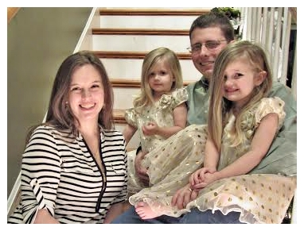

Hi, I'm Megs!
My mother taught me to sew and hand stitch when I was little, and I always admired the felt items that my grandmother used to make. Around Christmas in 2012, I was trying to come up with a unique present for my niece, and I thought felt food would be perfect since she was getting a play kitchen from her parents. I continued making felt food and toys for my sweet niece who was the recipient of many of my first creations.
As a stay a home mom, it was important to provide opportunities for my girls to use their imaginations. Imaginative play is such an important part of early learning. I wanted to help them grow their imaginations and thought play food would be a great way to do so, but I didn't like the plastic options for many reasons. As my girls got older, I gradually grew my collection by leaps and bounds because they would give me ideas based on what they would like to have. Little did I know my felt food creations would grow from a beloved hobby into a career venture!
I officially started HeartFELT Creations by Megs in January 2016. I design every item myself and often get much of my inspiration from photos of actual food. I also enjoy doing custom projects, as they help me exercise my creativity. I love the unique ideas my customers come up with, and I end up creating items I wouldn't normally come up with on my own. Each piece is made of a polyester mix, craft grade felt. They are also hand-stitched by me.
One of my favorite nonfood projects was an Easter stained glass window countdown calendar that I created for myself. When I first started the project, I was given a few odd looks when I described it. My friends and family weren't sure something like that could be created out of felt. Well, it can! And it looks amazing! I actually still have it hanging up in my basement because it's too pretty to pack away!
Thank you for visiting my website and store! And thank you for buying handmade!
Love,
Megs
"Creativity is putting your imagination to work, and it's produced the most extraordinary results in human nature." Ken Robinson